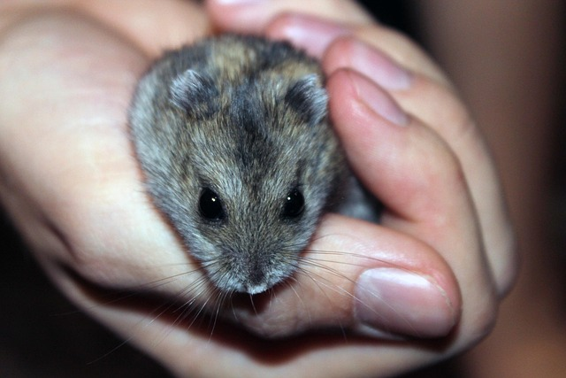

스마일 동물병원
0.2Km강아지 고양이 진료
예약가능진료중
베스트 펫 케어
0.5Km야간 진료 가능
24시간진료중
펫프렌즈 동물병원
0.8Km예방접종 전문
예약가능진료마감
웰빙 동물의료센터
1.1Km종합진료
응급대기진료중
웰빙 동물의료센터
1.1Km종합진료
응급대기진료중
웰빙 동물의료센터
1.1Km종합진료
응급대기진료중
헬로펫 종합병원
1.3Km종합진료
응급대기진료중
강북 펫케어
1.5Km종합진료
응급대기진료중
이웃집 동물병원
1.8Km일반 진료
종합진료
응급대기진료중
행복 펫클리닉
2.0Km고양이 강아지 가능
응급대기진료중
멍멍 케어 동물병원
0.3Km강아지 전문
응급대기진료중
퍼피웰 병원
0.7Km예방접종 중심
예약가능진료중
하이펫 동물병원
1.0Km소형견 전문
예약가능진료중
러브펫 병원
1.4Km종합 진료
예약가능진료중
하이펫 동물병원
1.0Km소형견 전문
예약가능진료중
러브펫 병원
1.4Km종합 진료
예약가능진료중
행복한 고양이 병원
0.3Km고양이 전문
예약가능진료중
캣케어 동물병원
0.9Km고양이 외과 진료
예약가능진료중
냥이동물병원
1.3Km중성화 전문
예약가능진료중
캣케어 동물병원
0.9Km고양이 외과 진료
예약가능진료중
냥이동물병원
1.3Km중성화 전문
예약가능진료중
프리미엄 캣클리닉
1.5Km고양이 피부과
예약가능진료중
이그조틱 케어 병원
1.0Km파충류 진료
예약가능진료중
조류클리닉
1.6Km앵무새 진료
예약가능진료중
햄스터 헬스 병원
0.9Km소동물 전문
예약가능진료중
토끼 동물의료센터
2.0Km토끼 중점 진료
예약가능진료중
햄스터 헬스 병원
0.9Km소동물 전문
예약가능진료중
토끼 동물의료센터
2.0Km토끼 중점 진료
예약가능진료중
수의사 상담
커뮤니티
더보기
귀여운 고양이 관련 꿀팁 공유합니다!
고양이사랑

강아지 훈련 팁을 알려드립니다!
강아지아빠

우리집 막내 햄찌의 귀여움을 함께해요!
햄토리중독
강아지 훈련 팁을 알려드립니다!
멍아지